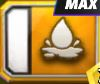
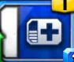
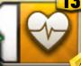
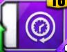
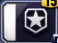
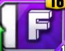
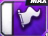
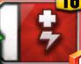
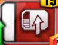
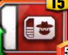

Каждый персонаж имеет в своём арсенале большое количество различных приёмов. Многие из которых наносят какие либо эффектов по мимо стандартного урона
| Название | Изображение иконки приёма | Описание |
|---|---|---|
| bleed |  | Кровотечени. Наносит определённое количество урона при кеаждом ходе. Урон кровотечение не может быть понижен к нему может быть только имунитет. |
| Healing |  | Эффект лечения с течением времени, более похоже на регенерацию. |
| Heal |  | Моментальное лечение. |
| Stun |  | Заставляет противника пропустить ход. |
| Reduce Notches |  | Отодвигает в противоположную сторону или же наоборот приблеает полоску удержания. |
| Finisher |  | Противник берёться на удержание(в некоторых случаях может быть и болевым.) |
| submision |  | Противник теряет здоровье и заряд приёмов на 1 с каждым ходом который длится болевой приём. |
| HP steal |  | Ворует запас здоровья у противника. |
| Move up |  | Варяжает приём определённого цвета на определённое значение. |
| Move steal |  | Ворует у противника заряд приёмов. |